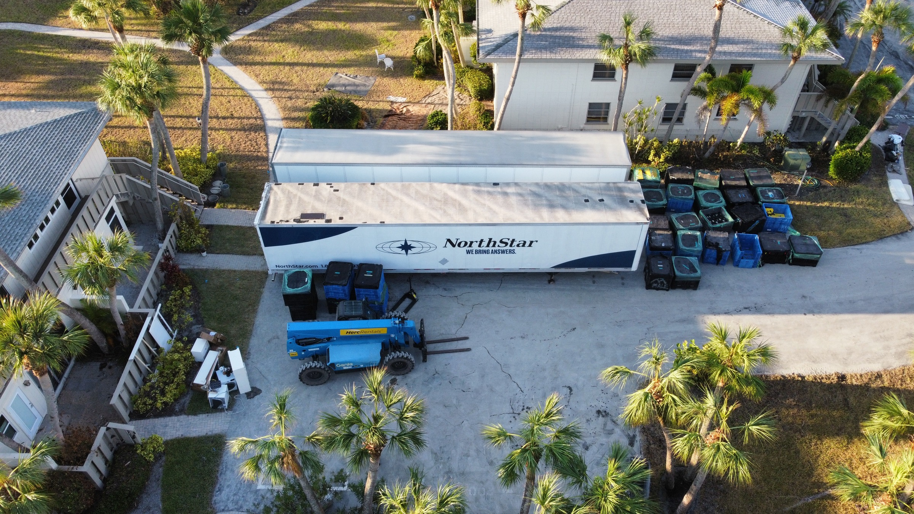

Recovery services
Recovery across
complex properties.
Emergency response, restoration and specialty contracting for the places your organization depends on.

experience
One point of coordination.
Connect immediate recovery needs with the broader scope of remediation, demolition and reconstruction.
Retail · Education · Healthcare · Manufacturing · Hospitality · Industrial
40+ years of experience
From first assessment
to the next operating chapter.
Emergency response
Initial assessment and mitigation priorities following property damage or disruption.
Restoration
Fire and water restoration coordinated around the needs of the property.
Demolition
Demolition services aligned with the approved project scope and site requirements.
Hazardous materials abatement
Abatement of hazardous building materials as part of the recovery or project scope.
Environmental remediation
Remediation services for affected buildings and sites.
Reconstruction
Repair and rebuilding that carry the property into its next phase.
Make the next decision clear.
Assess and prioritize
Evaluate initial safety concerns and establish mitigation priorities.
Define and approve
Develop the scope and cost reserve for client review and approval.
Document and update
An Operations Manager coordinates daily updates, logs, photos and financial estimates.